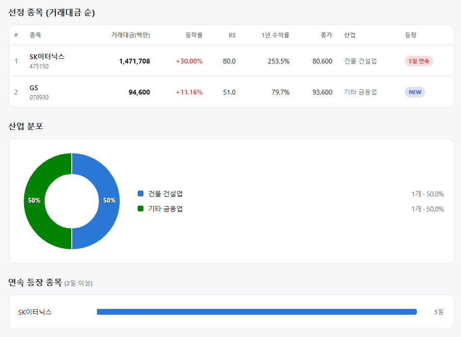

매일의 주도주 정리를 위해 기록합니다.
연속적으로 나온 종목들 또는 상승 후 조정받는 종목 위주로 리서치 해보시면 좋을 것 같습니다.

*오늘의 퀀트픽으로 'sk이터닉스' 입니다.
5일연속 등장하며 상한가를 기록했네요:)
상승추세, 수급, 펀더멘탈 3박자가 잘 맞았네요.
#주도섹터
전력 인프라 및 전기장비
주요 종목: LS ELECTRIC(+16.74%), 지엔씨에너지(+29.96% ), LS에코에너지(+21.85%), 대원전선(+16.78%), 한미글로벌(+25.91%).
분석: 전선 테마가 +12.42%, 전기장비 업종이 +11.53%, 에너지장비및서비스 업종이 +16.39% 상승했습니다. AI 데이터센터 가동 및 전력망 확충에 따른 기획성 전력 장비주로 매기가 집중되었습니다. LS ELECTRIC(+16.74%) 및 지엔씨에너지(+29.96%) 등 관련 자산으로 기관 및 외인 수급이 강하게 유입되었습니다.
반도체 메가 캡 및 IT·플랫폼·2차전지
주요 종목: 삼성전자(+3.26%), SK하이닉스(+4.48%), NAVER(+9.95%), 셀바스AI(+18.00%), SK이노베이션(+11.66%), 삼성SDI(+11.46%).
분석: 삼성전자(+3.26%)와 SK하이닉스(+4.48%)가 나란히 상승하며 지수 반등을 견인했습니다. 대표 플랫폼인 NAVER(+9.95%)와 2차전지 셀 업체인 SK이노베이션(+11.66%), 삼성SDI(+11.46%) 등 그간 낙폭이 컸던 주요 대형주로 매수세가 광범위하게 확산되었습니다.
코스피 지수는+4.40% 상승한 7,096로 마감하며 7,000선을 다시 회복했습니다. 대형주 중심의 코스피 200 지수 역시 +4.27% 상승한 1,126.33을 기록했습니다. 코스닥 지수 또한 +5.22% 상승한 790.28로 마감하여 양대 지수 모두 반등세를 보였습니다.
유가증권시장에서 외국인 투자자가 2조 1,359억 원, 기관 투자자가 976억 원을 동반 순매수하며 지수 상승을 이끌었습니다. 반면 개인 투자자는 2조 2,079억 원을 순매도하며 차익 실현 및 매물 소화 포지션을 취했습니다.
통계로 본 코스피, 바닥은 어디쯤일까?
이번 여름 코스피는 6월 고점(9,114p) 대비 약 30% 하락했습니다. 2000년 이후 통계로 보면 이는 평균에서 -2 표준편차쯤 벗어난 극단적 조정으로, 여기서 더 하락할 확률은 5% 안팎입니다. 실제 과거와 견줘도 코로나19(-36%), 2022년 금리 인상기(약 -31%), 2008년 금융위기(약 -54%) 다음가는 규모라, 금융위기급 사태가 아니라면 '깊이'만으로는 바닥권에 근접했다고 볼 수 있습니다.
다만 진짜 질문은 "얼마나 더 빠지느냐"가 아니라 "바닥을 확인하는 데 얼마나 걸리느냐"입니다. 과거 패턴은 둘로 갈립니다. 코로나19처럼 두 달 만에 급하게 빠진 경우엔 한 달 만에 되돌리는 V자 반등이 나왔지만, 2022년처럼 15개월에 걸쳐 서서히 하락한 경우엔 바닥 부근에서 넉 달간 반등과 반락을 반복했습니다. 급락은 짧게, 장기 하락은 길게 바닥을 다진 셈입니다.
이번엔 애매합니다. 하락 속도는 코로나19형(V자 후보)에 가깝지만, 당시와 달리 경기 부양·금리 인하라는 반전 카드를 기대하기 어렵습니다. 형태는 V자를 닮았는데 연료가 부족한 상황이죠. 그래서 깊이는 바닥권이되, 바닥을 다지는 시간은 길어질 수 있다는 게 합리적 결론입니다. 지금은 저점을 맞히려 애쓰기보다, 그 확인 과정을 견딜 수 있게 비중을 관리하며 실적으로 증명하는 기업을 골라두는 시간으로 쓰는 것이 현명해 보입니다.
오늘 하루도 수고하셨습니다.